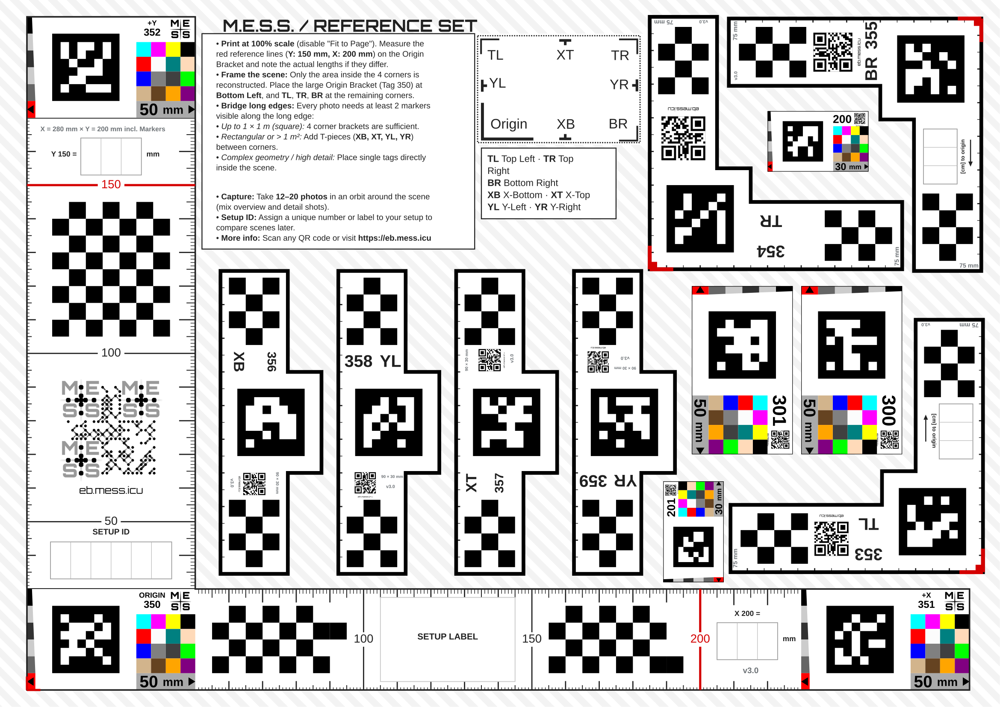
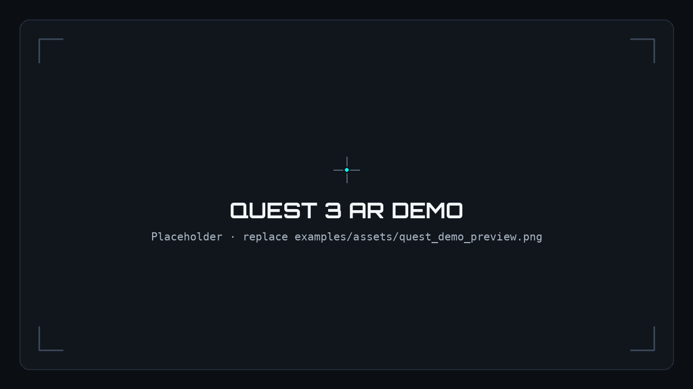
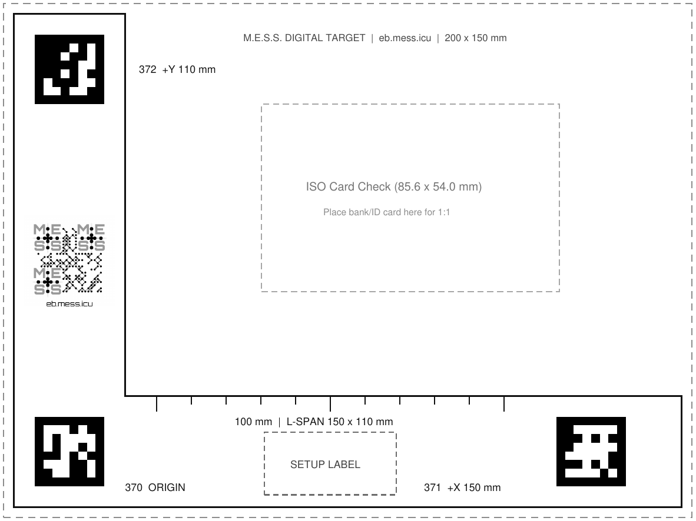

SCREEN
1:1 Target →
A4 · 350–352 · 1:1 display
PDF ↗

Physical millimeter (0, 0, 0) WebXR anchor for Meta Quest 3 — calibrate once, lock a native XRAnchor, and track at 90 FPS with the camera off.


XRAnchor loop
XRAnchor creation time
fx = fy: 866–892 px)
src/ · 110 passing tests
Meta Quest 3 · OculusBrowser 157 / Chrome 157 · 1280×1080 · self-consistency metrics are not independent metrology certification · anchors session-scoped, calibration persisted in localStorage.
WebXR starts (0, 0, 0) in an arbitrary room frame, while Quest Browser's getUserMedia() stream exposes no camera intrinsics, no headset offset, and ~50 ms of capture delay. Calibrating all three once lets native WebXR SLAM take over.
Orbit around a flat L-angle (350–352 or 370–372). A background Web Worker solves focal length K, viewerFromCameraGL, and capture delay, checks held-out views, and caches the profile in localStorage.
Five steady 3-tag views create one native XRAnchor on the physical origin and stop the camera. Quest SLAM drives the coordinate frame at 90 FPS with zero optical fallback.
Use SCAN (camera on) for perimeter markers (353–359), 90 Hz hand-coupled tags (300–301), Time-Copies, and [● REC] paths; switch to MEASURE (camera off) for fingertip hover and pairwise mm distance rails.